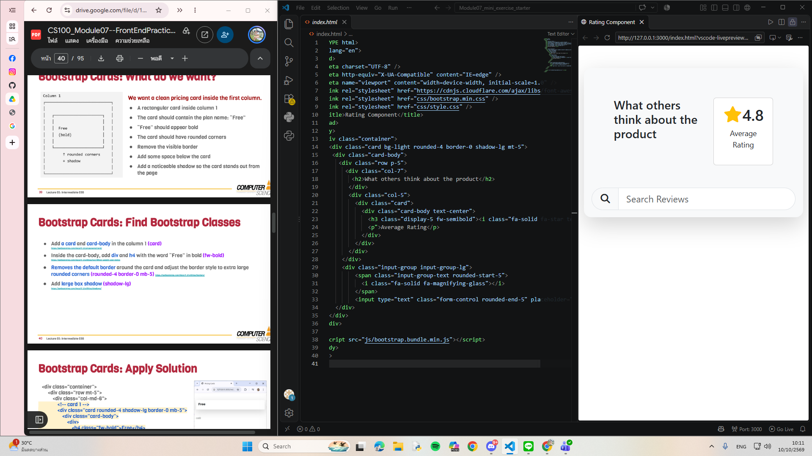
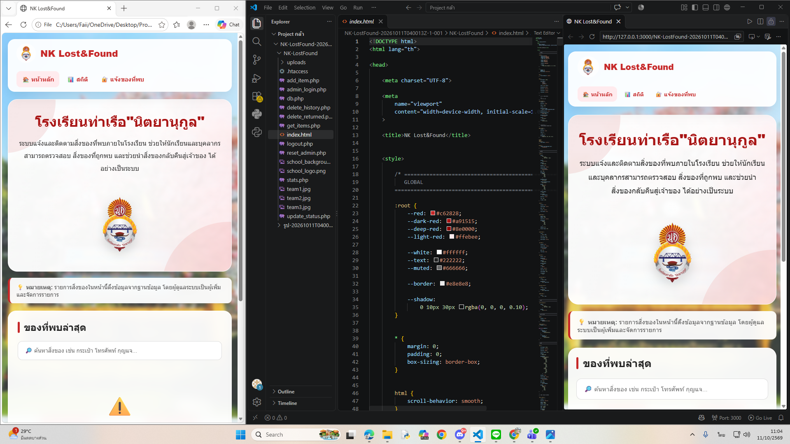

About Me
- ชื่อ : นางสาวณิชาภัทร ชะเอมเทศ
- รหัสประจำตัวนักศึกษา : 6909650225
- Instagram : nichaphat._06
- คณะ : คณะวิทยาศาสตร์และเทคโนโลยี
- สาขาวิชา : วิทยาการคอมพิวเตอร์ เอกคอมพิวเตอร์ประยุกต์ (ภาคพิเศษ)
- สิ่งที่อยากบอกกับทุกคน : โดยส่วนตัวชอบคีย์บอร์ดน่ารักๆ เสียงครีมๆ ของแบรนด์ Big penguin รุ่น YUNZII C98 Cake Meow Keyboard Creamy Mechanical Keyboard
Portfolio
Mini Exercise
- Title : Mini Exercise
- Type : Self-learning
- Date : 28 September 2026
- Role : Developer
- Description : หนูฝึกใช้ Bootstrap ในการทำ Card-body
- Skills : HTML CSS และ Bootstrap
- Reflection : ตอนทำ Exercise เรื่อง ตอนทำ หน้าต่างรีวิว (Rating Component) โดยใช้ Bootstrap Framework ในการจัดเลย์เอาต์และตกแต่งเว็บไซต์ค่ะ หนูได้เรียนรู้ใช้ Utility classes ต่างๆ มากขึ้น เช่น การใส่เงาหนา (shadow-lg) การทำมุมโค้ง (rounded-4) และการเอาเส้นขอบออก (border-0) รวมถึงการจัดระบบ Grid ตอนแรกมีความท้าทายเล็กน้อยในการเลือกใช้คลาสให้ถูกต้องตามสไตล์ที่กำหนดและการจัดตำแหน่งภายในคอมโพเนนต์ แต่พอเปิด Live Preview เช็กผลลัพธ์และเข้าไปแก้โค้ดจุดที่ทำออกมาได้ถูกต้องตามแบบค่ะ ถ้าพัฒนาต่อ อยากลองปรับแต่งให้รองรับ Responsive หน้าจอมือถือให้สวยงามยิ่งขึ้น และอยากเพิ่มโค้ด JavaScript เพื่อให้ช่องค้นหาริวิวสามารถทำงานได้จริงค่ะ
- Evidence :

NK Lost&Found
- Title : NK Lost&Found
- Type : Competition
- Date : 27 September 2026
- Role : Technical Advisor
- Description : เว็บแอปพลิเคชันระบบแจ้งและติดตามสิ่งของที่หายภายในโรงเรียนท่าเรือ "นิตยานุกูล" (NK Lost&Found) เพื่อให้นักเรียนและบุคลากรสามารถตรวจสอบ สิ่งของที่ถูกพบ และช่วยนำส่งของกลับคืนสู่เจ้าของได้อย่างเป็นระบบ โดยข้าพเจ้าทำหน้าที่เป็นที่ปรึกษาด้านเทคนิค (Technical Advisor) ในการให้แนวคิด วางโครงสร้างระบบฐานข้อมูลด้วย PHP และ SQL รวมถึงแนะนำการเขียนโค้ดส่วนหน้าเว็บด้วย HTML, CSS, JavaScript และการประยุกต์ใช้ AI ในการพัฒนาโปรเจกต์
- Skills : HTML, CSS, JavaScript, PHP, SQL, Database Management, AI-Assisted Development, Technical Mentoring
- Reflection : ในการทำกิจกรรมครั้งนี้ ข้าพเจ้าได้ทำหน้าที่เป็นที่ปรึกษาและพี่เลี้ยงด้านเทคนิค (Technical Advisor) ให้กับรุ่นน้องในการพัฒนาเว็บแอปพลิเคชัน NK Lost&Found เพื่อส่งเข้าประกวดแข่งขันงานศิลปหัตถกรรม โดยช่วยระดมไอเดีย วางโครงสร้างข้อมูล และไกด์แนวทางการเขียนโค้ดทั้งส่วนของ Frontend และ Backend จากการทำงานนี้ทำให้ข้าพเจ้าได้พัฒนาทักษะการถ่ายทอดความรู้และการเป็นพี่เลี้ยง (Mentorship) รวมถึงได้ฝึกกระบวนการคิดวิเคราะห์เพื่อวางระบบ Tech Stack ให้ตอบโจทย์ผู้ใช้งานจริง และเรียนรู้วิธีการแนะนำให้ผู้อื่นใช้ AI Tools มาช่วยเพิ่มประสิทธิภาพในการพัฒนาโปรแกรม อย่างไรก็ตาม ความท้าทายสำคัญคือการอธิบายเนื้อหาหลังบ้านที่มีความซับซ้อน เช่น ระบบฐานข้อมูล SQL และการทำงานของ PHP ให้เข้าใจง่ายสำหรับผู้เริ่มต้น ซึ่งข้าพเจ้าได้แก้ปัญหาโดยการวาดแผนผังภาพข้อมูล (Data Flow) ควบคู่กับการใช้ AI ช่วยสอนวิธีไล่เช็กจุดผิดพลาด (Debugging) ทีละขั้นตอน สำหรับก้าวต่อไปหากมีโอกาสได้ทำหน้าที่นี้อีก ข้าพเจ้าอยากศึกษาภาพสถาปัตยกรรมเว็บสมัยใหม่ (Modern Web Frameworks) เพิ่มเติม เพื่อนำความรู้มาประยุกต์และแนะนำต่อยอดในโปรเจกต์ถัดไป รวมถึงพัฒนาทักษะการวาง Roadmap การทำงานร่วมกันให้มีประสิทธิภาพมากยิ่งขึ้น
- Evidence :

What I Built
Explain
- Client : เว็บบราวเซอร์ทำหน้าที่เป็นเหมือน Client ที่คอยอ่านโค้ด HTML และ CSS แล้วทำการ Render ออกมาเป็นหน้าเว็บไซต์ให้เรามองเห็น
- Server : การเปิดไฟล์ด้วยวิธีนี้ บราวเซอร์จะเข้าไปดึงข้อมูลจากฮาร์ดดิสก์ในเครื่องคอมพิวเตอร์ของเราโดยตรง โดยไม่มีการเชื่อมต่อหรือส่งคำขอร้องขอ (HTTP Request) ผ่าน Internet ไปยัง Web Server เพื่อขอข้อมูล หน้าเว็บนี้จึงทำงานแบบ offline บนเครื่องส่วนตัว 100%
How I Built It
- การจัดระเบียบโครงสร้างไฟล์ : สร้างโฟลเดอร์หลักสำหรับโปรเจกต์ และภายในโฟลเดอร์นี้สร้างโฟลเดอร์ย่อยสำหรับเก็บไฟล์ต่างๆขึ้นมา เช่น โฟลเดอร์สำหรับไฟล์ CSS (css) และโฟลเดอร์สำหรับไฟล์สื่อ (media) เพื่อให้การจัดการไฟล์เป็นระเบียบและง่ายต่อการจัดการระเบียบ
- การวางโครงสร้างของหน้าเว็บด้วยแท็ก HTML : สร้างไฟล์ HTML หลัก (index.html) จัดวางโครงสร้างของหน้าเว็บด้วยแท็ก HTML เช่น header, main, section, article, ul, li เพื่อให้เนื้อหามีความเป็นระเบียบและสามารถปรับแต่งได้ง่าย
- การจัดรูปแบบและตกแต่ง (CSS) : ทำการเชื่อมโยงไฟล์ CSS เข้ากับ HTML และปรับแต่งหน้าเว็บไซต์ เช่น การจัดกึ่งกลาง การกำหนดระยะขอบ (Margin) และการแก้ไขปัญหาเฉพาะจุด เช่น การแยกคำสั่งปรับรูปภาพ <img> ออกจากกรอบ <section> เพื่อให้ภาพแสดงผลได้พอดีไม่ล้นกรอบ
- การตรวจสอบและแก้ไข (Debugging) : ทดสอบการแสดงผลบนบราวเซอร์ และตรวจสอบความถูกต้องของการเชื่อมโยงไฟล์ (Relative path) โดยปรับเน้นการใช้เครื่องหมายใน path ให้เป็น Forward slash (/) เสมอ เพื่อป้องกันปัญหาลิงก์เสีย (Broken Link) เมื่อนำไฟล์ไปเปิดในระบบปฏิบัติการอื่น
- เครื่องมือและแหล่งข้อมูลที่ใช้ : ใช้โปรแกรมเขียนโค้ด (VS Code) สำหรับการเขียนและแก้ไขโค้ด HTML และ CSS, ใช้ Google Gemini สำหรับปรึกษาและค้นหาข้อมูลเกี่ยวกับการเขียนโค้ด และใช้ เว็บไซต์ W3Schools เป็นแหล่งอ้างอิงสำหรับฟอนต์ตัวหนังสือ
Reflection
- ประสบการณ์และความท้าทายที่พบในการพัฒนาเว็บไซต์ : การไม่รู้ว่าแท็กตัวไหนใช้ยังไงและมีหน้าที่อะไรบ้าง ทำให้ต้องค้นหาข้อมูลเพิ่มเติมเกี่ยวกับแท็ก HTML และ CSS เพื่อให้สามารถใช้งานได้อย่างถูกต้อง
- จากการทำ A1 นี้ เข้าใจอะไรเกี่ยวกับการพัฒนาเว็บไซต์มากขึ้น : ทำให้เข้าใจความหมายและวิธีการใช้งานแท็กมากขึ้น และทำให้รู้เหตุผลของการต้องจัดไฟล์และโครงสร้างให้เป็นระเบียบ
- สิ่งที่อยากปรับปรุงหรือพัฒนาต่อในอนาคต : อยากพัฒนาให้เว็บมีฟังก์ชันเยอะขึ้น มีการ input, output เพื่อถามตอบกับเจ้าของเว็บ เพื่อจะได้ฝึกการเขียนโค้ดให้ดีขึ้นด้วย